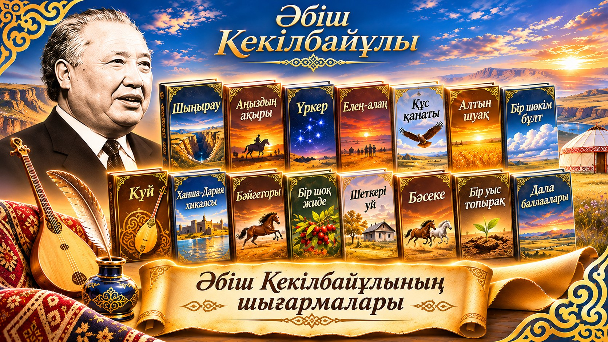

Шыңыраудың тереңі — жер астында,
Әбіш мұрасының тереңі — ұлт жадында.
Әбіш Кекілбайұлының он екі шығармасы — он екі инфографика: сандар, карталар, сюжет графиктері, кейіпкерлер желісі, символдар және бүгінгі оқырманға айтар ой.

Он екі шығарма сөреде тұр. Кітапты таңдасаңыз, ол сөреден шығып, өз әлеміне апарады.
Маңғыстаудан шыққан жазушы, аудармашы, драматург, мемлекет және қоғам қайраткері.
Кекілбаев Лев Толстойдың «Соғыс және бейбітшілік» роман-эпопеясын, Иван Бунин шығармаларын қазақ тіліне аударған.
Жазушы «Үркерге» материал жинап, Ақтөбе өңіріндегі Толыбай ауылына келгенде, ақсақалдар оған Абылқайыр ханның жерленген жерін көрсеткен. Бүгінде онда «Хан моласы» кешені тұр.
«Аңыздың ақыры» романы «Бір ел — бір кітап» республикалық акциясында оқырмандардың ерекше бағасына ие болған.
Он екі шығарма — үш үлкен арнаға тоғысады.
Дарын, қызғаныш, даңққұмарлық, билік пен махаббат — адамның ішкі әлеміндегі тартыс.
XVIII ғасырдағы қазақ даласы, хан мен халық, бірлік пен ел болашағы.
Соғыс жылдарының ауыртпалығы, ананың қайсарлығы мен мейірімі.
Әбіш Кекілбайұлының мұрасын оқушыға жаңа, цифрлық және шығармашылық форматта жеткізу жоспары.
Жазушы мұрасын кеңінен таныту, оқушыларды Әбіш шығармаларын оқуға ынталандыру, әр кітаптың бүгінгі мәнін ашу.
Постер ілу, сайтты көрсету, викторина
«Қай кітап саған сай?» тесті, оқу топтары
Эссе, мұнара, Үркер, диптих, анама хат
Оқушы еңбектерінің көрмесі, үздіктерді марапаттау
Әр сынып кемінде бір кітапты оқып, талқылайды.
5 акция бойынша оқушылардың эссе, сурет, хат көрмесі жасалады.
Сайт пен постер келесі жылдары да мектепте қолданылады.
Жарты ғасыр бұрын жазылған кітаптар бүгінгі жасөспірімнің сұрақтарына жауап береді.
Әлеуметтік желіде «лайк» пен атақ қуған заманда Еңсептің тағдыры — нақты ескерту.
«Шыңырау» →Күш пен билік адамды бақытты ете ме? Әміршінің тағдыры осыны ойлатады.
«Аңыздың ақыры» →Ел болашағы бірлікке байланысты екенін XVIII ғасыр тарихы арқылы ұғынамыз.
«Үркер», «Елең-алаң» →Ата-ана еңбегін бағалау, отбасы татулығы — әр ұрпаққа керек құндылық.
«Құс қанаты» →5 сұраққа жауап бер — Әбіштің қай кітабынан бастау керек екенін біл.
Әр кітапты оқығаннан кейін өткізілетін шығармашылық іс-шаралар.
Кітаптарды оқығанда кездесетін ұғымдар.
«Қорғау режимі» слайдтарды толық экранда ашып, уақытты өзі санайды. «📝 Суфлер» батырмасы қорғау сөзін экранның төменгі жағына шығарады.
Сайттағы деректер мына ғылыми мақалалар мен басылымдарға сүйенеді.